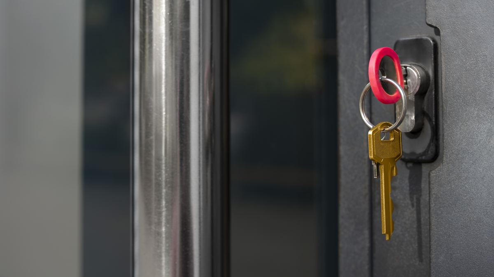

Dom i mieszkanie · 4 min czytania
Złamany klucz w zamku drzwi – co robić, a czego unikać
Złamany klucz w zamku to często skutek wkładki, która od dawna chodziła ciężko. Podpowiadamy, co możesz bezpiecznie zrobić sam, czego unikać i jak nie dopuścić do powtórki.

Złamany klucz w zamku to zwykle koniec dłuższej historii. Wkładka od miesięcy chodziła coraz ciężej, klucz był stary i cienki, a pewnego dnia wystarczył mocniejszy obrót. W dłoni zostaje główka, a reszta tkwi w drzwiach. Dobra wiadomość: w wielu przypadkach da się to rozwiązać sprawnie – pod warunkiem że w pierwszych minutach nie pogorszysz sytuacji.
Złamany klucz w zamku – najpierw oceń sytuację
Zanim cokolwiek zrobisz, sprawdź trzy rzeczy:
- Po której stronie drzwi jesteś? Jeśli drzwi są otwarte – nie ma pośpiechu. Jeśli stoisz na zewnątrz, a drzwi są zamknięte, potrzebujesz pomocy, żeby wejść. Jeśli jesteś w środku i nie możesz wyjść, przeczytaj akapit poniżej.
- Czy fragment klucza wystaje z wkładki? Nawet milimetr czy dwa robią różnicę.
- W jakiej pozycji został? Fragment, który został w pozycji wyjściowej (tak, jak wkłada się klucz), zwykle łatwiej usunąć niż taki, który pękł w połowie obrotu.
Zachowaj obie części klucza – główkę i fragment, który uda się wyjąć. Mogą się przydać, jeśli trzeba będzie dorobić nowy klucz, a nie masz zapasowego.
Klucz złamał się od środka i nie możesz wyjść z mieszkania? Bez paniki – jeśli nic Ci nie grozi, zwykle wystarczy spokojnie poczekać na pomoc. Jeśli jednak w domu pojawi się dym, zapach gazu albo ktoś źle się poczuje, nie czekaj na ślusarza i dzwoń od razu pod 112. Gdy zablokowane drzwi są jedyną drogą wyjścia, a w grę wchodzi czyjeś bezpieczeństwo, służby ratunkowe są pierwszym wyborem.
Co możesz zrobić sam – bezpiecznie
Jeśli fragment klucza wyraźnie wystaje, możesz spróbować go wyjąć. Rób to z wyczuciem:
- Jeśli drzwi są otwarte, nie zamykaj ich, dopóki fragment tkwi w zamku.
- Złap wystający fragment pęsetą lub cienkimi szczypcami.
- Ciągnij prosto do siebie, delikatnie, bez przekręcania i bez szarpania.
Jeśli po jednej, dwóch próbach fragment ani drgnie – odpuść. Każda kolejna próba zwiększa ryzyko, że wepchniesz go głębiej albo uszkodzisz drobne elementy wewnątrz wkładki. Fragment schowany w całości we wkładce to już zadanie dla fachowca.
Czego nie robić ze złamanym kluczem
- Nie wkładaj zapasowego klucza na siłę. Wepchniesz złamaną część głębiej i zablokujesz wkładkę na dobre.
- Nie używaj kleju. Popularny „trik” z klejem błyskawicznym często kończy się sklejeniem wnętrza wkładki – wtedy zostaje już tylko jej wymiana.
- Nie próbuj obracać fragmentu szczypcami, żeby „dokończyć” otwieranie. Ułamany kawałek łatwo pęka dalej.
- Nie wierć wkładki. Bez doświadczenia łatwo uszkodzić zamek w drzwiach, a nie tylko wkładkę.
- Nie podważaj drzwi, żeby ominąć problem. Naprawa ościeżnicy kosztuje więcej niż usunięcie fragmentu klucza.
Klej i domowe sposoby to najczęstszy powód, dla którego prosta sprawa – usunięcie ułamka klucza – zamienia się w wymianę całej wkładki. Jeśli fragment nie wychodzi od razu, lepiej zadzwonić po pomoc.
Dlaczego klucz się łamie
Klucz rzadko pęka bez powodu. Najczęstsze przyczyny to:
- Zużyty klucz – po latach metal jest cieńszy, a nacięcia starte. Szczególnie słabe bywają kopie robione z kopii.
- Ciężko pracująca wkładka – brud, kurz i brak konserwacji sprawiają, że klucz trzeba przekręcać coraz mocniej. Skąd to się bierze i jak temu zaradzić, wyjaśniamy w artykule zacięty zamek w drzwiach.
- Opadnięte drzwi – gdy rygiel ociera o blachę zaczepową w ościeżnicy, cały opór przenosi się na klucz.
- Ciężki pęk kluczy – gdy latami zwisa z klucza włożonego do zamka, obciąża i klucz, i wkładkę.
- Używanie klucza jak klamki – na przykład ciągnięcie za niego drzwi.
Co dalej z wkładką i kluczem
Po usunięciu fragmentu sprawdź, jak pracuje zamek. Jeśli zapasowy klucz wchodzi gładko i obraca się bez oporu, wkładka zapewne jest w porządku, a winny był sam klucz. Wtedy:
- dorób nowy klucz z oryginału, a nie z wytartej kopii,
- jeśli masz wkładkę z kartą kodową, zamów klucz na podstawie karty,
- zdejmij z klucza do drzwi ciężkie breloki.
Jeśli zapasowy klucz też chodzi ciężko, wkładka wymaga konserwacji albo wymiany. Zwykle wymienia się samą wkładkę, bez ruszania zamka w drzwiach – a przy okazji możesz podnieść poziom bezpieczeństwa. Podpowiedzi znajdziesz w artykule o tym, jak wybrać wkładkę do drzwi.
Gdy przekręcanie klucza zaczyna wymagać więcej siły niż zwykle, potraktuj to jako ostrzeżenie. Konserwacja lub wymiana wkładki na tym etapie jest dużo prostsza niż wyjmowanie złamanego klucza wieczorem pod zamkniętymi drzwiami.
Klucz złamał się, a drzwi są zamknięte
Jeśli stoisz na zewnątrz, a fragment klucza zablokował jedyny zamek, nie kombinuj – zadzwoń po pomoc. Przez telefon powiedz, czy fragment wystaje, czy drzwi są zamknięte na klucz, czy tylko zatrzaśnięte, i jakie to drzwi. Na tej podstawie poznasz cenę, zanim zaczniemy pracę. Na miejscu poprosimy o dowód osobisty i dokument potwierdzający prawo do lokalu – jeśli został w środku, pokażesz go zaraz po otwarciu. Co jeszcze warto wiedzieć w takiej sytuacji, opisujemy w poradniku zatrzaśnięte drzwi lub zgubione klucze.
Pomagamy przy awaryjnym otwieraniu mieszkań i domów całą dobę, 7 dni w tygodniu – w Kielcach i okolicznych miejscowościach. Złamany klucz w zamku? Zadzwoń: 668 292 270.